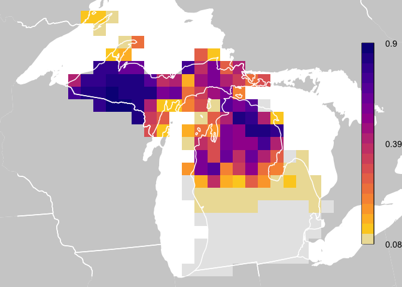

Overview
The eBird Status and Trends project at the Cornell Lab of Ornithology uses machine-learning models to estimate distributions, relative abundances, and population trends at high spatial and temporal resolution across the full annual cycle of 2,980 bird species globally. These models learn the relationships between bird observations collected through eBird and a suite of remotely sensed habitat variables, while accounting for the noise and bias inherent in community science datasets, including variation in observer behavior and effort. Interactive maps and visualizations of these model estimates can be explored online, and the Status and Trends Data Products provide access to the data behind these maps and visualizations. The ebirdst R package provides a set of tools for downloading these data products, loading them into R, and using them for visualization and analysis.
Installation
Install ebirdst from GitHub with:
if (!requireNamespace("remotes", quietly = TRUE)) {
install.packages("remotes")
}
remotes::install_github("ebird/ebirdst")This version of ebirdst is designed to work with the 2023 version of Status Data Products and the 2022 version of Trends Data Products. Users are strongly discouraged from comparing Status and Trends results between years due to methodological differences between versions. If you have accessed and used previous versions and/or may need access to previous versions for reasons related to reproducibility, please contact ebird@cornell.edu and your request will be considered.
Webinars
A series of eBird Status and Trends webinars presented in collaboration with Birds of the World are available on YouTube. These webinars cover much of the same material as the vignettes available through the ebirdst R package website, but in a more visual interactive format. The webinars are as follows
- Estimating Abundance and Trends for the World’s Birds using eBird data: an introduction to the methodology used to generate the eBird Status and Trends Data Products and how these data products are being used in conservation and research.
- Working with eBird Status and Trends Data Products in R: a three part series of webinars exploring how to work with the data products in R.
- Part I: introduction to the range of data products available as well as the suite of tools and training materials available for working with these data. This webinar also covers how to work with the spatial data products in QGIS.
- Part II: applications of the eBird Status Data Products.
- Part III: applications of the eBird Trends Data Products.
Data access
Data access is granted through an Access Request Form at: https://ebird.org/st/request. Access with this form generates a key to be used with this R package and is provided immediately (as long as commercial use is not requested). Our terms of use have been designed to be quite permissive in many cases, particularly academic and research use. When requesting data access, please be sure to carefully read the terms of use and ensure that your intended use is not restricted.
After completing the Access Request Form, you will be provided a Status and Trends Data Products access key, which you will need when downloading data. To store the key so the package can access it when downloading data, use the function set_ebirdst_access_key("XXXXX"), where "XXXXX" is the access key provided to you.
Access outside of R
For those interested in accessing these data outside of R, there are two alternative options:
- The most widely used data products are available for direct download through the Status and Trends website. Spatial data are accessible in widely adopted GeoTIFF and GeoPackage formats, which can be opened in QGIS, ArcGIS, or other GIS software.
- There is an API for programmatic access outside of R. For more information on the eBird Status and Trends Data Products API, consult the associated vignette.
Citation
The eBird Status Data Products and eBird Trends Data Products come from different versions and require different citations.
Please cite the eBird Status Data Products with:
Fink, D., T. Auer, A. Johnston, M. Strimas-Mackey, S. Ligocki, O. Robinson, W. Hochachka, L. Jaromczyk, C. Crowley, K. Dunham, A. Stillman, C. Davis, M. Stokowski, P. Sharma, V. Pantoja, D. Burgin, P. Crowe, M. Bell, S. Ray, I. Davies, V. Ruiz-Gutierrez, C. Wood, A. Rodewald. 2024. eBird Status and Trends, Data Version: 2023; Released: 2025. Cornell Lab of Ornithology, Ithaca, New York. https://doi.org/10.2173/WZTW8903
Please cite the eBird Trends Data Products with:
Fink, D., T. Auer, A. Johnston, M. Strimas-Mackey, S. Ligocki, O. Robinson, W. Hochachka, L. Jaromczyk, C. Crowley, K. Dunham, A. Stillman, I. Davies, A. Rodewald, V. Ruiz-Gutierrez, C. Wood. 2023. eBird Status and Trends, Data Version: 2022; Released: 2023. Cornell Lab of Ornithology, Ithaca, New York. https://doi.org/10.2173/ebirdst.2022
Vignettes
For full package documentation, including a series of vignettes covering the full spectrum from introductory to advanced usage, please see the package website. The available vignettes are:
- Introduction to eBird Status Data Products: covers data access, available data products, and structure and format of data files.
- eBird Status Data Products Applications: demonstrates how to work with the raster data products and use them for a variety of common applications.
- eBird Trends Data Products: covers downloading and working with the eBird Trends Data Products.
Quick Start
This quick start guide shows how to download data and plot relative abundance values similar to how they are plotted for the eBird Status and Trends weekly abundance animations. In this guide, and throughout all package documentation, a simplified example dataset is used consisting of Yellow-bellied Sapsucker in Michigan. For a full list of the species available for download, look at the data frame ebirst_runs, which is included in this package.
IMPORTANT: eBird Status and Trends Data Products are designed to be downloaded and accessed using this R package. Downloaded data have a specific file structure and changing file names or locations will disrupt the ability of functions in this package to access the data. If you prefer to access data for use outside of R, consider downloading data via the eBird Status and Trends website.
library(fields)
library(rnaturalearth)
library(sf)
library(terra)
library(ebirdst)
# download example data, yellow-bellied sapsucker in michigan
ebirdst_download_status(species = "yebsap-example")
# load relative abundance raster stack with 52 layers, one for each week
abd <- load_raster("yebsap-example", resolution = "27km")
# load species specific mapping parameters
pars <- load_fac_map_parameters("yebsap-example")
# custom coordinate reference system
crs <- st_crs(pars$custom_projection)
# legend breaks
breaks <- pars$weekly_bins
# legend labels for top, middle, and bottom
labels <- pars$weekly_labels
# the date that each raster layer corresponds to is stored within the labels
weeks <- as.Date(names(abd))
print(weeks)
#> [1] "2023-01-04" "2023-01-11" "2023-01-18" "2023-01-25" "2023-02-01"
#> [6] "2023-02-08" "2023-02-15" "2023-02-22" "2023-03-01" "2023-03-08"
#> [11] "2023-03-15" "2023-03-22" "2023-03-29" "2023-04-05" "2023-04-12"
#> [16] "2023-04-19" "2023-04-26" "2023-05-03" "2023-05-10" "2023-05-17"
#> [21] "2023-05-24" "2023-05-31" "2023-06-07" "2023-06-14" "2023-06-21"
#> [26] "2023-06-28" "2023-07-05" "2023-07-12" "2023-07-19" "2023-07-26"
#> [31] "2023-08-02" "2023-08-09" "2023-08-16" "2023-08-23" "2023-08-30"
#> [36] "2023-09-06" "2023-09-13" "2023-09-20" "2023-09-27" "2023-10-04"
#> [41] "2023-10-11" "2023-10-18" "2023-10-25" "2023-11-01" "2023-11-08"
#> [46] "2023-11-15" "2023-11-22" "2023-11-29" "2023-12-06" "2023-12-13"
#> [51] "2023-12-20" "2023-12-27"
# select a week in the middle of the year
abd <- abd[[26]]
# project to species specific coordinates
# the nearest neighbor method preserves cell values across projections
abd_prj <- project(trim(abd), crs$wkt, method = "near")
# get reference data from the rnaturalearth package
# the example data currently shows only the US state of Michigan
wh_states <- ne_states(country = c("United States of America", "Canada"),
returnclass = "sf") |>
st_transform(crs = crs) |>
st_geometry()
# start plotting
par(mfrow = c(1, 1), mar = c(0, 0, 0, 0))
# use raster bounding box to set the spatial extent for the plot
bb <- st_as_sfc(st_bbox(trim(abd_prj)))
plot(bb, col = "white", border = "white")
# add background reference data
plot(wh_states, col = "#cfcfcf", border = NA, add = TRUE)
# plot zeroes as light gray
plot(abd_prj, col = "#e6e6e6", maxpixels = ncell(abd_prj),
axes = FALSE, legend = FALSE, add = TRUE)
# define color palette
pal <- ebirdst_palettes(length(breaks) - 1, type = "weekly")
# plot abundance
plot(abd_prj, col = pal, breaks = breaks, maxpixels = ncell(abd_prj),
axes = FALSE, legend = FALSE, add = TRUE)
# state boundaries
plot(wh_states, add = TRUE, col = NA, border = "white", lwd = 1.5)
# legend
label_breaks <- seq(0, 1, length.out = length(breaks))
image.plot(zlim = c(0, 1), breaks = label_breaks, col = pal,
smallplot = c(0.90, 0.93, 0.15, 0.85),
legend.only = TRUE,
axis.args = list(at = c(0, 0.5, 1),
labels = round(labels, 2),
cex.axis = 0.9, lwd.ticks = 0))